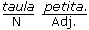

Gènere dels mots: classificació

 El que cal saber
El que cal saber

El nom és la categoria gramatical que serveix per designar persones, animals, coses, qualitats físiques o morals, etc. Pel que fa al seu contingut, és un element independent del context. En canvi, l'adjectiu és dependent:

En aquest apartat s'estudien les variacions de què són objecte els noms a causa del gènere (masculí o femení) i el nombre (singular o plural).
1. Classificació
En primer lloc, però, esmentem la classificació tradicional que es fa dels noms:
- Comuns/propis
- Concrets/abstractes
- Individuals/col·lectius
- Simples/compostos
- Primitius/derivats
- Comuns: designen genèricament éssers d'una mateixa espècie (flor, home, país, etc.).
Propis: designen individualment un ésser distingint-lo dels altres de la mateixa espècie (lliri, Manel, Suïssa, etc.).
- Concrets: designen objectes o éssers existents materialment (cadira, llaç, llibre, etc.).
Abstractes: designen qualitats o bé realitats abstractes (frivolitat, amor, fe, etc.).
- Individuals: designen un sol ésser (televisor, plat, full, etc.).
Col·lectius: designen un conjunt d'éssers o coses (pineda, gent, colla, etc.).
- Simples: un sol nom indica un sol concepte o cosa (tap, peu, cel, etc.).
Compostos: designen les coses amb més d'un nom simple (llevataps, centpeus, celobert, etc.).
- Primitius: són aquells que no deriven de cap altre (teula, fusta, gent, etc.).
Derivats: es formen a partir d'un mot primitiu (teulada, fuster, gentada, etc.).
2. El gènere del nom
|
Tradicionalment, els noms es classifiquen en masculins o femenins. Els que fan referència a coses o idees abstractes tenen un gènere atribuït arbitràriament. Si els noms designen persones i animals que tenen tots dos gèneres, el femení es forma de diverses maneres: | |
a) Afegint una -a al masculí. Ex.:
noi → noia
gat → gata
fill → filla
xicot →xicota
De vegades, el fet d'afegir la -a del femení pot fer modificar la darrera grafia del masculí:
|
p > b |
llop > lloba |
|
t > d |
nebot > neboda |
|
c > g |
amic > amiga |
|
f > v |
serf > serva |
|
u > v |
jueu > jueva |
|
s > ss |
ós > óssa |
|
l > l·l |
Camil > Camil·la |
També, en afegir la -a, la nova paraula té una síl·laba més i això pot fer variar l'accentuació o alguna grafia:
|
avi, àvia duc, duquessa |
veí, veïna roig, roja |
I pot fer que algunes consonants que abans eren mudes esdevinguin sensibles: senyor, senyora / sant, santa.
b)
- Els noms acabats en -òleg canvien aquesta terminació per -òloga: homòleg, homòloga / arqueòleg, arqueòloga.
- Els que acaben en vocal tònica fan el femení afegint -na: lleó, lleona / degà, degana / padrí, padrina.
- Els acabats en e,o canvien aquesta vocal per -a: mestre, mestra / viudo, viuda / monjo, monja.
c) En alguns casos el femení adopta unes terminacions específiques:
-essa: déu, deessa / baró, baronessa / jutge, jutgessa, etc. (però: príncep, princesa)
-ina: heroi, heroïna / gall, gallina / tsar,
-iu: emperador, emperadriu / actor, actriu, (però: director, directora).
d) En molt pocs casos el masculí es forma a partir del femení afegint-hi la terminació -ot: dida, didot / guilla, guillot / bruixa, bruixot...
e) Hi ha masculins i femenins que tenen una home, dona / oncle, tia / cavall, euga (o egua)
f) De vegades una sola forma serveix per als dos gèneres i la diferència s'estableix pel context. Són els acabats en:
-aire: (el/la) drapaire, boletaire, captaire, etc.
-ista: (el/la) periodista, excursionista, dentista, etc.
-cida: (el/la) homicida, parricida, suïcida, etc.
g) Hi ha noms d'animals que s'empren en un sol gènere. Si es vol distingir el sexe, cal afegir-hi els mots mascle o femella: cadernera mascle / cadernera femella. Rossinyol mascle / rossinyol femella.
h) Hi ha noms acabats en -ant, -ent que són invariables:
un, una) amant, cantant, etc.
(un, una) supervivent, etc.
(però: estudiant/estudianta, president/presidenta).
Exercicis
1) Formeu el femení dels noms següents:

2) Escriviu a la taula el femení d'aquests mots i classifiqueu-los segons la terminació -esa / -essa:
duc, advocat, diable, alcalde, sacerdot, metge, baró, marquès, abat, príncep, poeta, jutge, déu.
3) Recordeu que hi ha una sèrie de mots que tenen una forma per al femení i una altra per al masculí ( Ex.: pare → mare):
4) Escriu el gènere contrari en cada cas:
5) Canvieu el gènere de tots els noms que pugueu:
| ||||||||

6) Escriviu el femení dels noms remarcats del text següent:
| ||||||||